第六章 数据的收集与整理·拔尖卷
【北师大版2024】
时间：120分钟 满分：120分
姓名：___________班级：___________考号：___________
考卷信息：
本卷试题共24题，单选10题，填空6题，解答8题，满分120分，限时120分钟，本卷题型针对性较高，覆盖面广，选题有深度，可量化学生的掌握程度！
一、选择题（本大题共10小题，每小题3分，满分30分）
1．（24-25七年级上·山东青岛·期末）为更好地了解全校同学参加体育活动的情况，小明设计了一份调查问卷，需要受调查的同学写出个人的性别、年龄、最喜欢参加的体育活动项目、每周参加体育活动的时长等信息．
以下说法正确的是（ ）
A．性别是定量数据 B．年龄是定性数据
C．最喜欢参加的体育活动项目是定量数据 D．每周参加体育活动的时长是定量数据
2．（24-25七年级下·山东·开学考试）某次数学测试，抽取部分同学的成绩（得分为整数），整理制成如图所示的频数分布直方图，根据图示信息描述不正确的是（ ）
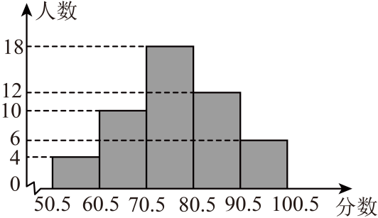
A．频数分布直方图中组距是10
B．本次抽样样本容量是60
C．70.5−80.5这一分数段的频数为18
D．这次测试及格（不低于60分）率为92%
3．为了了解某地区老年人的健康状况，小明在公园里调查了60名老年人今年生病的次数，小颖在医院里调查了50名老年人今年生病的次数，小亮在邻居中调查了30名老年人今年生病的次数，小萌利用派出所的户籍网随机调查了该地区10%的老年人今年生病的次数，你认为他们的调查方式比较合理的是（ ）
A．小萌 B．小亮 C．小颖 D．小明
4．一次数学测试后，某班80名学生的成绩被分为5组，第一至第四组的频数分别为8､10､16､14，则第五组的频率是（ ）
A．0.1 B．0.2 C．0.3 D．0.4
5．为了解电脑硬盘上文件占用空间及储存量剩余情况，最合适选用的统计图为（ ）
A．条形统计图 B．扇形统计图 C．折线统计图 D．频数直方图
6．为了解某市九年级男生的身高情况，随机抽取了该市100名九年级男生，他们的身高xcm统计如下：
组别cm | x≤160 | 160<x≤170 | 170<x≤180 | x>180 |
人数 | 15 | 42 | 38 | 5 |
根据以上结果，全市约有3万男生，估计全市男生的身高不高于180cm的人数是（ ）
A．28500 B．17100 C．10800 D．1500
7．（2025·浙江温州·二模）一分钟跳绳是温州中考体育选考项目，某校为了了解九年级女生该项目的情况，随机抽取40名女生进行测试并绘制频数直方图如图所示．若成绩为不少于160个为优秀，则抽取的女生中跳绳能达到优秀有（ ）
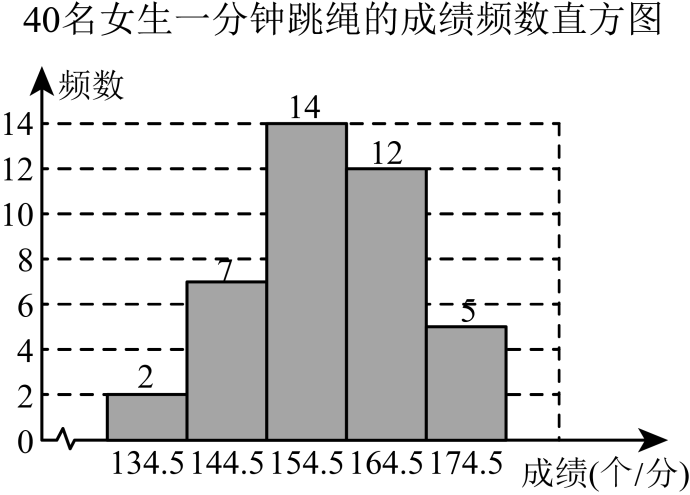
A．5人 B．12人 C．14人 D．17人
8．（24-25八年级下·河北秦皇岛·期中）某校随机抽取若干名八年级学生进行体能测试，成绩记为1分，2分，3分，4分共4个等级，将调查结果绘制成如下不完整的条形统计图和扇形统计图．根据图中信息，可得出得4分的学生人数为（ ）
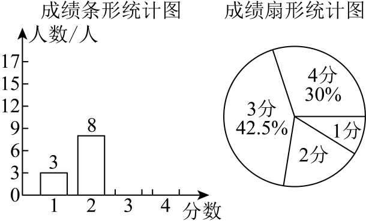
A．8人 B．10人 C．12人 D．17人
9．综合与实践课上，老师带领同学们开展“利用树叶的特征对树木进行分类”的实践活动．10位同学每人随机收集核桃树、枇杷树的树叶各1片，通过测量得到这些树叶长，宽（单位：cm）的数据后，计算每片叶子的长宽比，并绘制出折线统计图如图所示：
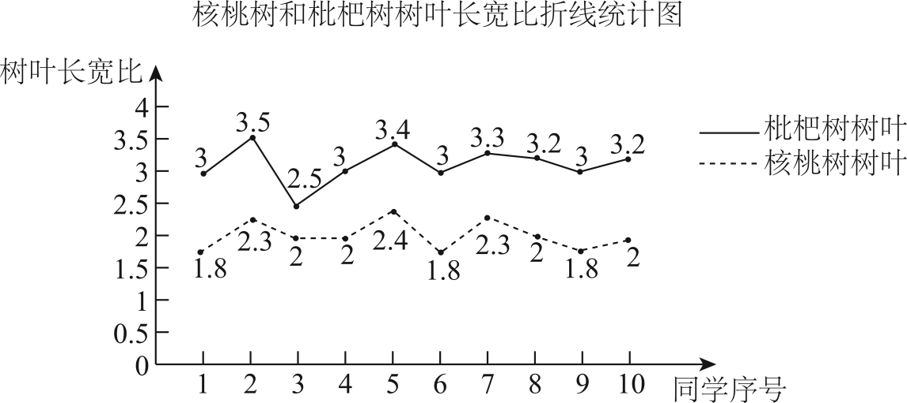
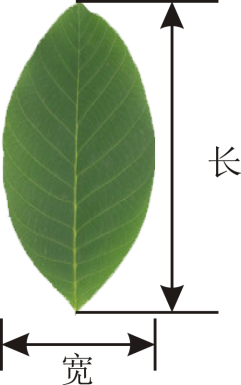
根据以上信息，下列说法错误的是（ ）
A．核桃树叶长宽比为2出现的次数最多
B．枇杷树叶的长宽比最大为3.5
C．小明测量一片枇杷叶的长为9.3cm，小明断定它的宽一定为3cm
D．小亮收集到一片长13.8cm、宽6cm的树叶，判断它是一片核桃树叶
10．（24-25七年级下·湖南长沙·期末）小星与同学们在开展《白昼时长规律的探究》的综合与实践学习时，为了探究不同纬度和不同经度地区白昼时长的变化规律，收集了2024年北京、新疆阿图什、广东揭阳三地二十四节气日白昼时长的相关数据，整理出频数分布表如下（表中所示的经纬度接近三地中心位置的经纬度）：根据七年级下册教材“综合与实践”的学习内容结合表格分析，下列说法中错误的是（ ）
白昼时长/小时 | 频数(天数) | ||
北京 (东经116°20′、北纬39°56′ ) | 新疆阿图什 (东经76°17′、北纬40°12' ) | 广东揭阳 (东经116°05′、北纬23°20′ ) | |
9<x≤10 | 5 | 5 | 0 |
10<x≤11 | 4 | 4 | 5 |
11<x≤12 | 2 | 2 | 6 |
12<x≤13 | 4 | 4 | 6 |
13<x≤14 | 2 | 2 | 7 |
14<x≤15 | 7 | 7 | 0 |
15<x≤16 | 0 | 0 | 0 |
A．白昼时长=正午时刻+日出时刻+日落时刻−正午时刻
B．北京和阿图什纬度大致相同，经度不同，白昼时长基本相同
C．北京和揭阳的经度大致相同，纬度不同，白昼的时长不同
D．同一时间，不同地方白昼时长主要受纬度影响．
二、填空题（本大题共6小题，每小题3分，满分18分）
11．（24-25七年级下·山东菏泽·期中）统计得到的一组数据最大值为139，最小值为48，取组距为10，可分成 组．
12．（24-25八年级下·江苏泰州·阶段练习）将50个数据分成5组后，如果前四组的频数分别是3，10，12，15，那么第5组数据的频率为 ．
13．在数学活动课上，小派运用统计方法估计瓶子中的豆子的数量．他先取出100粒豆子，给这些豆子做上记号，然后放回瓶子中，充分摇匀之后再取出100粒豆子，发现其中16粒有刚才做的记号，利用得到的数据可以估计瓶子中豆子的数量约为 粒．
14．某校随机调查了若干名家长与中学生对带手机进校园的态度情况，绘制统计图如图所示，已知被调查的家长的人数与被调查的学生的人数相等，则家长反对学生带手机进校园的人数为 ．
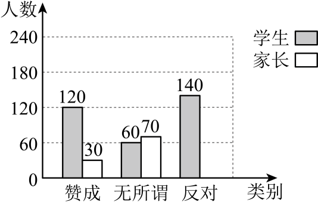
15．（24-25七年级下·江苏南通·期末）对若干名青少年进行“你最喜爱的运动项目”的问卷调查，得到如图不完整的扇形统计图（图1）及条形统计图（图2）（柱的高度从高到低排列）条形统计图不小心被撕掉了一块，则图2的“（ ）”中应填的运动项目是 （从“足球”“游泳”“骑自行车”“篮球”中选填）
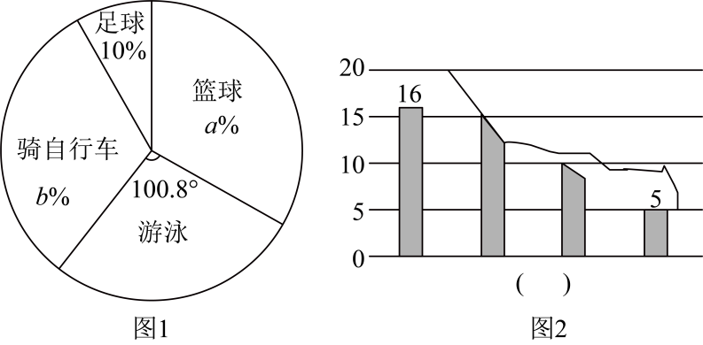
16．（24-25七年级下·宁夏吴忠·期末）如图呈现了2024年9月－12月某家电经销商的冰箱销售量及增长率，根据图中信息，该家电经销商在11月的冰箱销售量是 台．
三、解答题（本大题共8小题，满分72分）
17．（6分）（25-26八年级上·海南省直辖县级单位·期中）“地球一小时”是世界自然基金会应对全球气候变化所提出的一项全球性节能活动，提倡于每年三月最后一个星期六的当地时间20:30，家庭及商业用户关上不必要的电灯及耗电产品一小时，以此来表示他们对于应对气候变化行动的支持，为了解小区居民的用电情况，某小区物业随机抽取了部分家庭72小时的用电情况，并整理成如下不完整的频数分布表和频数分布直方图．
居民用电情况频数分布表
组别 | 用电量／度 | 频数（户数） | 百分比 |
A | x≤12.0 | 2 | 5% |
B | 12.0<x≤15.0 | m | 10% |
C | 15.0<x≤18.0 | 12 | a |
D | 18.0<x≤21.0 | 14 | 35% |
E | x>21.0 | n | 20% |
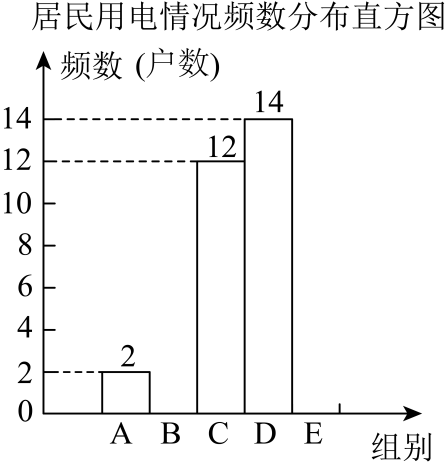
请根据图表提供的信息，解答下列问题：
(1)调查总户数为______；
(2)频数分布表中，a=______，m=______，n=______；
(3)为了响应节能减排号召，请提一条合理的建议．
18．（6分）（25-26八年级上·广西南宁·期中）营养学家通常用身体质量指数（简称BMI）衡量人体胖瘦程度，这个指数等于人体体重（单位：kg）与人体身高（单位：m）平方的商．对于成年人来说，BMI<18.5为偏瘦；18.5≤BMI<24为正常；24≤BMI<28为偏胖；BMI≥28为肥胖），某数学兴趣小组为本校八年级学生的胖瘦程度进行统计调查，从该校所有八年级学生随机抽出部分学生，测得他们的身高和体重值，并绘制了两幅不完整的统计图．
根据以上信息回答下列问题：
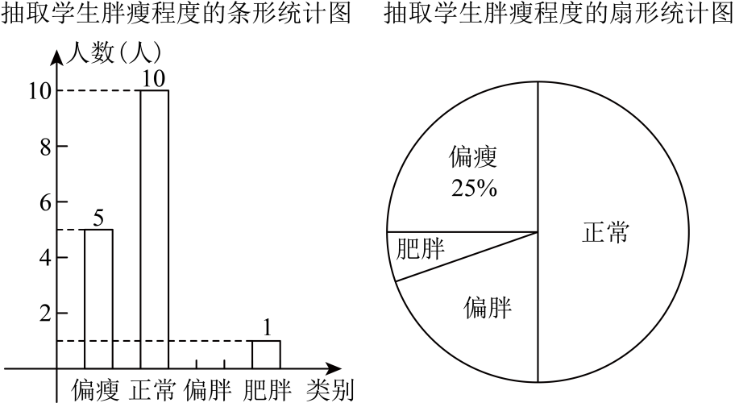
(1)补全条形统计图；
(2)某女生的体重为51.2千克，身高为1.6米，求该女生的BMI数值；
(3)请估计该校八年级500名学生BMI≥24的总人数；
(4)根据以上统计数据，针对该校八年级学生的胖瘦程度，请提出一条合理建议．
19．（8分）（24-25七年级下·广东·期末）某学校组织了一次知识竞赛，赛后发现所有学生的成绩（总分100分）均不低于50分，为了解本次竞赛的成绩分布情况，随机抽取若干名学生的成绩作为样本进行整理，并绘制了不完整的统计表和统计图（如图）．
成绩x/分 | 频数 | 所占百分比 |
50≤x<60 | 16 | 8% |
60≤x<70 | a | 31% |
70≤x<80 | 72 | 36% |
80≤x<90 | c | d |
90≤x≤100 | 12 | b |
请你根据统计图表解答下列问题：
(1)此次抽样调查的样本容量是 ；
(2)a= ，b= ，c= ；
(3)请补全学生成绩分布直方图；
(4)比赛按照分数由高到低共设置一、二、三等奖，如果有25%的参赛学生能获得一等奖，那么一等奖的分数线是多少？
20．（8分）（25-26八年级上·广西南宁·阶段练习）南宁教育局为了解2025年暑假各初中学校学生参与暑期志愿服务的情况，在全市各初中学校随机调查了部分参与志愿服务的学生，对他们的志愿服务时间进行统计，整理并绘制成如下不完整的统计图表．请根据统计图表中的信息解答下列问题：
志愿服务时间x（小时） | 频数 | |
A | 0<x≤30 | a |
B | 30<x≤60 | 10 |
C | 60<x≤90 | 16 |
D | 90<x≤120 | 20 |
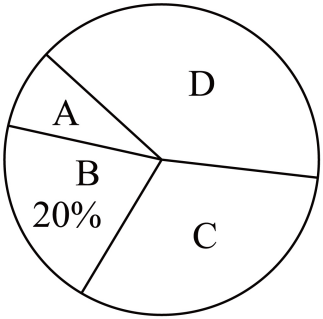
(1)本次被抽取的学生共有_____名；表中a=_____；扇形统计图中“D”所对应的扇形的圆心角度数为_____．
(2)如果全市共有10000名初中生参与志愿服务，那么志愿服务时间超过60小时的大约有多少人？
21．（10分）光明商场和幸福商场2014年上半年（1—6月）每月的销售额情况统计如下，请根据图中的信息解答下列问题．
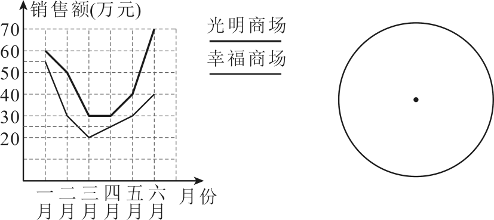
(1)两商场销售额差距最大的在____________月，销售额相差_________万元．
(2)光明商场上半年的销售额共计____________万元．
(3)请将幸福商场上半年的销售额情况用扇形统计图表示出来．（不写画图过程，但图中需标明每一扇形部分的圆心角的大小）
22．（10分）成都市为提倡节约用水，准备实行自来水“阶梯计费”方式，用户用水超出基本用水量的部分享受基本价格，超出基本用水量的部分实行超价收费，为更好地决策，自来水公司随机抽取了部分用户的用水量数据，并绘制了如图不完整的统计图，（每组数据包括在右端点但不包括左端点），请你根据统计图解答下列问题：
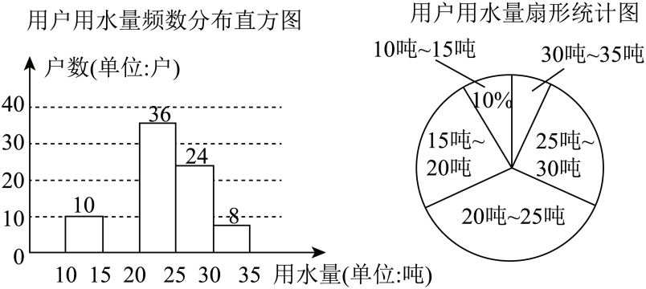
(1)此次抽样调查的样本容量是___________．
(2)补全频数分布直方图，求扇形图中“15吨~20吨”部分的圆心角的度数．
(3)如果自来水公司将基本用水量定为每户25吨，那么该地区6万用户中约有多少用户的用水全部享受基本价格？
23．（12分）某校为了调查学生视力变化情况，从该校2017届学生中抽取了部分学生进行连续三年的视力跟踪调查，将数据处理，绘制成折线统计图和扇形统计图，如图所示：
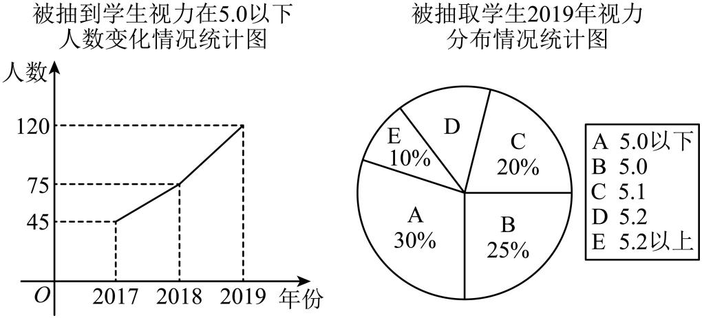
(1)该校被调查的学生2019年视力在5.0以下的学生有多少人？
(2)该校调查的学生共有多少名？
(3)现规定视力5.0以上的为合格，若被抽查年级共有600名学生，估计该年级在2019年有多少名学生视力合格？
24．（12分）为增强中学生体质，开展了“每天锻炼一小时”的体育活动．4月份对全市中小学生进行体质监测评价，专家组随机抽查了某区若干名初中学生．我们对专家的测评数据作了适当处理，并将统计结果绘制了如下两幅不完整的统计图，请你根据图中所给信息解答下列问题：
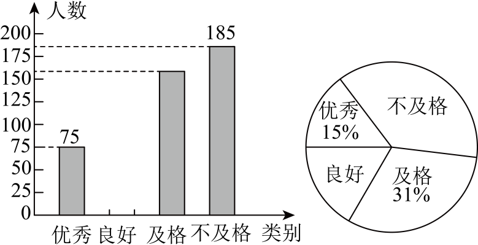
(1)请将两幅统计图补充完整；
(2)在这次监测评价中，一共抽查了 名学生，如果全市有10万名初中生，那么全市初中生中，可以达到优秀的学生约有 人；
(3)根据统计结果，请你简单谈谈自己的看法．